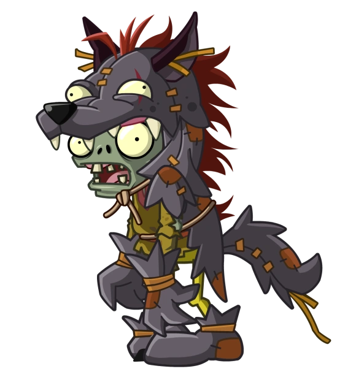
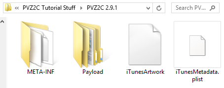
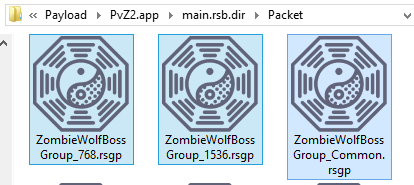
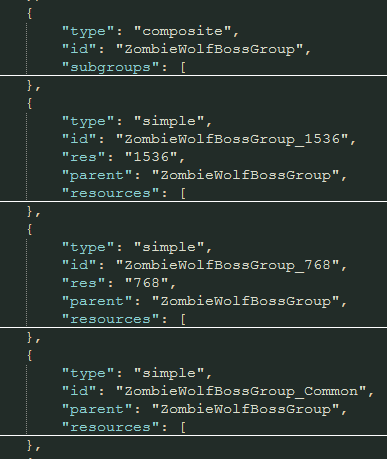
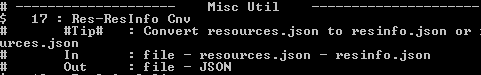
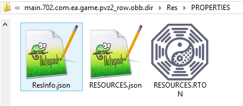
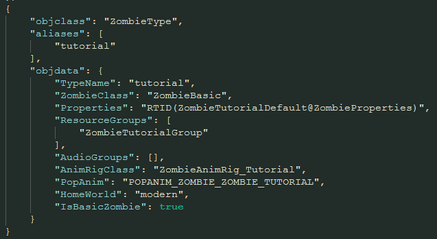
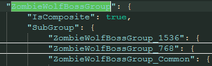
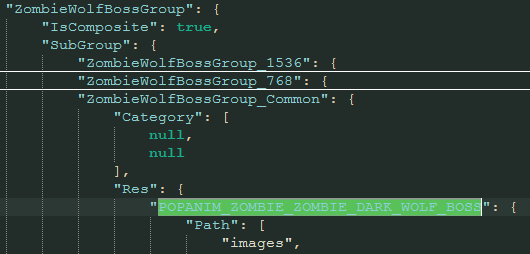
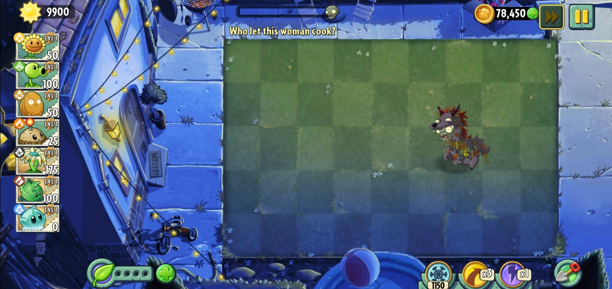

Have you ever wished to add a zombie from the Chinese version? If you're reading this you probably are.
Firstly, before we do anything, I want to make it clear that it isn't possible to exactly port most zombies.
You would mostly have to get creative with what the zombie does.
For this tutorial, I am going to port over Wolf Zombie.
I will not, however, port his ability. That's for another time.
It's time for the fun stuff! We can't have a zombie without sprites or animations, so we will be getting those directly from PVZ2C. You can find the Chinese obb here.
After you've downloaded it, use your archiver of choice (such as WinRar or 7-zip) and open that .ipa file.
Hop into the newly made folder and you should have this.
First, rename this folder and remove all of the chinese characters.
What matters most to us here is the main.rsb, found in Payload/PvZ2.app.
Extract it with SPCUtil like you would any other obb.
(Note: Extracting packages is not needed and will just result in an error from SPCUtil)
Congratulations, you're in. Grab the files from your zombie of choice.
In my case, it's these. Copy and paste these files to your mod's Packet folder.
If you didn't already know, these files store information about the game's assets.
As such, we need to get their Chinese info to bring over to our mod.
Such information can be found in __MANIFESTGROUP__.rsgp, extract it like normal.
Inside you'll find RESURCES.RTON, and that's our target.
I'm tired of repeating "extract it", hopefully you know the drill by now.
Open it up and look for your zombie.
You'll find something similar to this. Copy all of it.
Afterwards, go to your mod's folder, head into Res > PROPERTIES to find RESOURCES.RTON.
Open it and just paste the stuff. Make sure to check for missing commas!
Now, I have a confession to make. RESOURCES.json sucks ass. There's an alternative to this however.
Here's what we're gonna do: Convert shitty RESOURCES into the awesome ResInfo.
Open it with SPCUtil and use this option. (It might not have the same number for you!)
Then, rename ~RESOURCES to ResInfo.
Actually I lied. The reason we're doing this is because of Slots.
Long story short, too complicated. However, there's an alternative solution.
If we convert Resources to ResInfo and then back to Resources, SPCUtil will do the boring work for us.
Open ResInfo with SPCUtil and convert it back to Resources.
Rename this new file back to RESOURCES.json and delete the old Resources.
Your folder should look like this:
We're getting close to the end of this step.
Convert Resources to RTON and move ResInfo to your mod's folder, replace if needed.
You are officially done with resources.
Time for StructInfo.
If you've been paying attention to this tutorial so far, you should be able to do StructInfo on your own. Good luck!
Great job, we're at the final stretch!
Go on, open up the file in your mod.
Copy and paste the code of a basic like this.
Firstly, change the alias and typename in order to not conflict with other zombies.
For ResourceGroups, replace ZombieTutorialGroup with your zombie's group.
You can find the name in ResInfo. In my case, it's ZombieWolfBossGroup.
While you're here, the POPANIM is also found in ResInfo.
Add your zombie to an easily accesible level so you can test it out.
Now, make sure everything is correct and pack the obb.
There's the man himself.
